Maintaining organisations
- This article explains maintainance of organisation in Aakash Business Tool(ABT).
- It includes creation of organisation and saving organisation details.
welcome page
On loading application, it asks for address of the server location such as emulator,
tablet or remote server. Select any one of them.
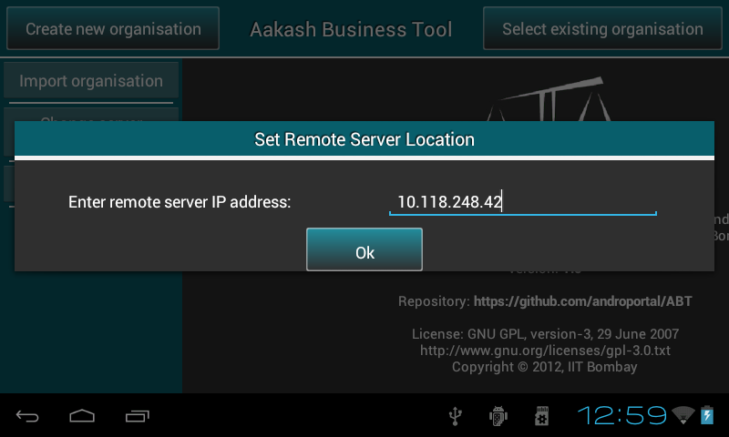
Choose tablet option to run ABT on android device.
Android developers can Choose emulator option, to test app or modify ABT source code.
On selecting Remote server for ABT, enter IP address manually.
It requires a live internet connection, it can be within an Organization
or an Institute.
User can access a centralize remote server running within
the Institute.
The advantage is, each user will have his/her own
account on the server.
The central server runs Postgres as a database engine.
Click Apply button and you will see a page contains the features for the
first screen that displays two buttons, Create new organisation and
Select existing organisation at the top.
Setting up a new organisation
The first step to get started in ABT is to create an organisation
- Go to Welcome page of ABT >> Press Create New Organisation.
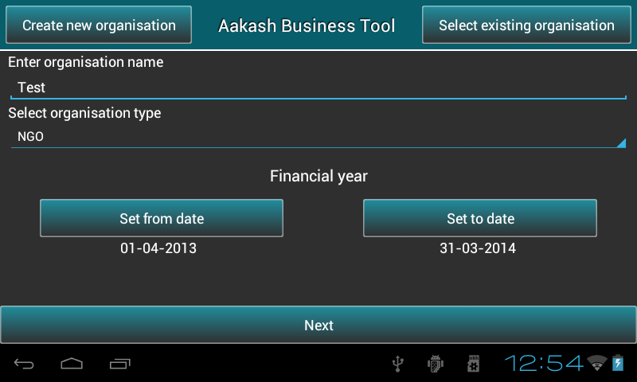
- To get started with the application, there should be atleast one organization.
- Type the name of organisation.
- Select the organisation type (NGO or Profit Making).
- Specify the Financial Year From and Financial Year To.
- Note: ABT provides 1st April to 31st March as the predefined financial year, But user can change the To date manually according to organization’s rules or requirement. Once the From date is seted, To date gets automatically updated by 12 months and minus 1 day.
- Press next to sign up as a user. This will open a promt-box to select the user role such as Admin or guest.
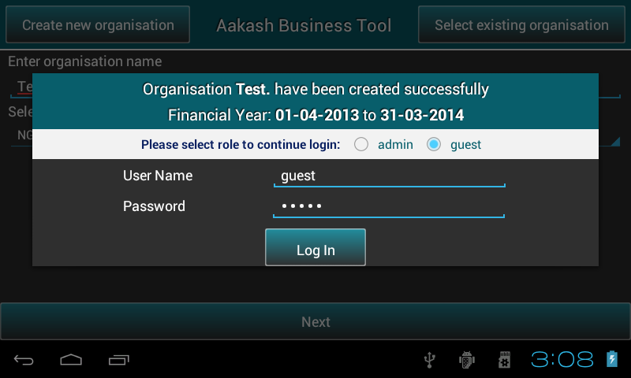
- Guest user has a default username guest and password is also guest.
- If you select Admin, a new pop-up box will appear on the screen to sign up as an Admin.
Save details and press Login to continue.
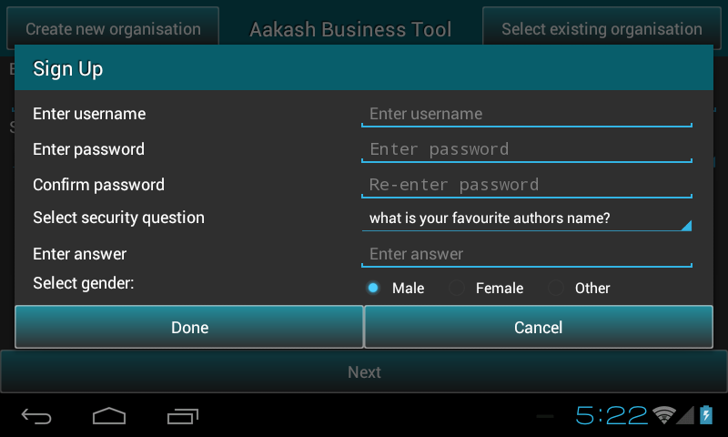
- Fill the organisation details if required else, press Skip.
- Press the Save button to save the organisation details.
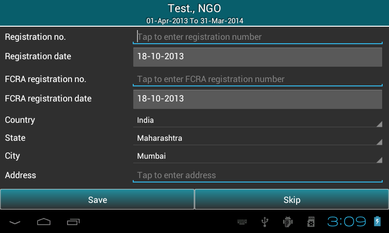
- Note: Organisation will get created by clicking either Save or Skip button.
- Welcome to ABT’s master menu!
Select existing organisation
- Go to Welcome page of ABT >> Press Select New Organisation.
- It will display the list of Organisations.
- Select the required organisation and respective financial year.
- Press Next.
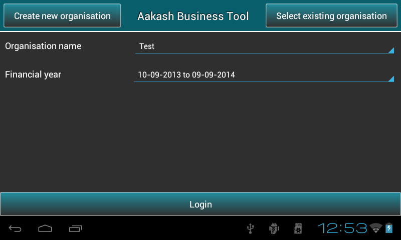
- This will ask you to login. Guest user have to just select radio button and Admin/Manager/operator
have to insert username and password.
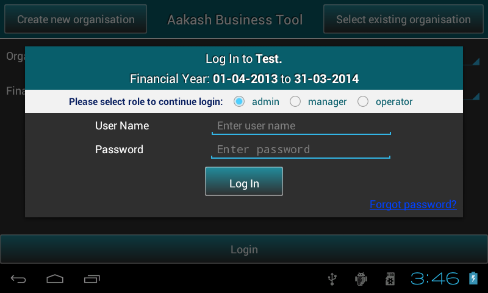
Account management
- Account management covers three major parts ie. create,search, edit and delete account .
- Go to Master menu > Create account.
Save account code preference
- Before you start creating a new account, you have to specify the account code type ie.
manual or automated. When first time you enter into this page, The alert-box will appear on the screen
(See below figure).
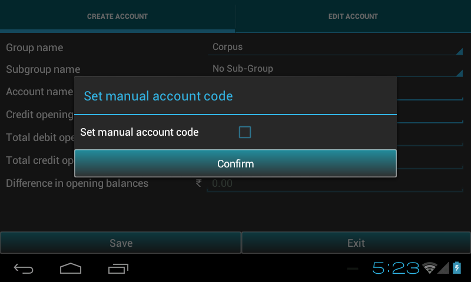
- Check the check-box if manual account code has to be provided or leave it as it is for automatic
account code generation. Click on Save button to save this preference.
Remember, This is only one time activity. Later on this alert-box will
not appear on the screen instead it will follow the saved preference(manual or automatic)
for account code.
How to create a new account?
- Create an account under respective group and subgroup with an
opening balance. This will automatically update the total debit opening balance,
total credit opening balance and difference between them.
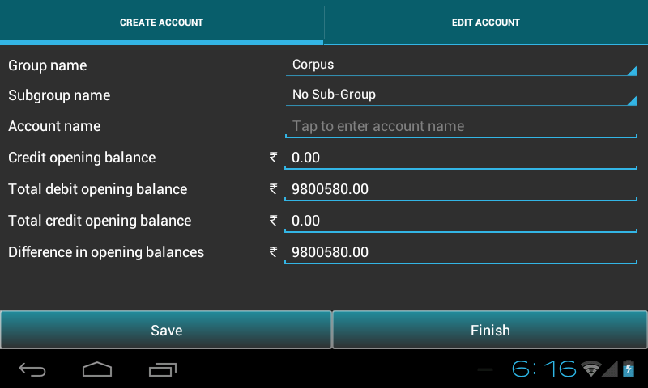
- Press Save to save an account.
- Finish button will take to the Master menu page.
Search/Edit account
- Select Edit account tab.
- It displays list of all account names.
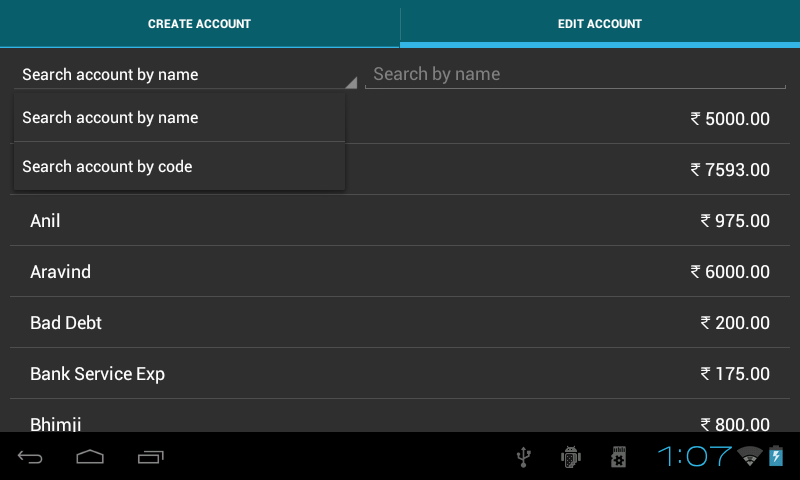
- If manual account code was checked in Preferences, there will be two options ie. Search by account name and code. Otherwise,search by account name.
- User can Edit/Delete selected account name from the list only if that account has no transactions.
- Edit account will display complete information about respective account as shown in figure. Only account name and opening balance fields are editable. Press Save to save the changes.
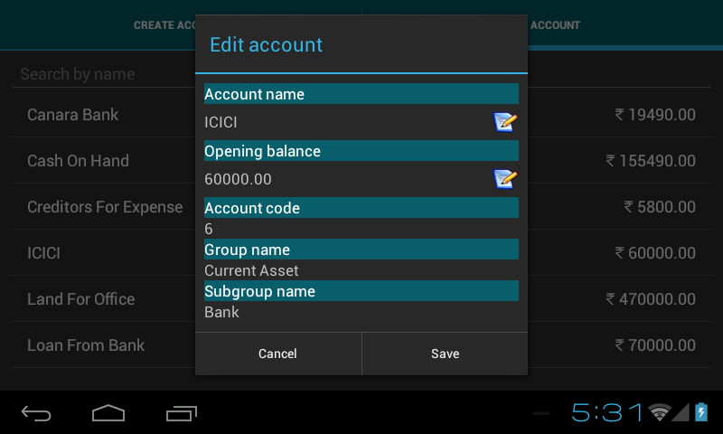
- Note: Opening balance field is not editable, if account comes under group Direct Income, Direct Expense, Indirect Income and Indirect Expense due to its zero opening balance.
- Press Delete account to delete the account. Account having opening balance or under transaction cannot be deleted.
Transaction management
- This chapter provides guidence to add/search/edit/clone/delete transaction.
- Go to Master menu > Create Voucher.
Record Transaction
- See Create Voucher tab as shown in below fig. for recording transactions.

- To record transaction in ABT follow the below steps:
- Select the mode of transaction from the list of voucher type.
- Mode of transaction can be Contra, Journal, Payment, Receipt, Debit Note, Credit Note,Sales,
Sales Return, Purchase, Purchase Return.
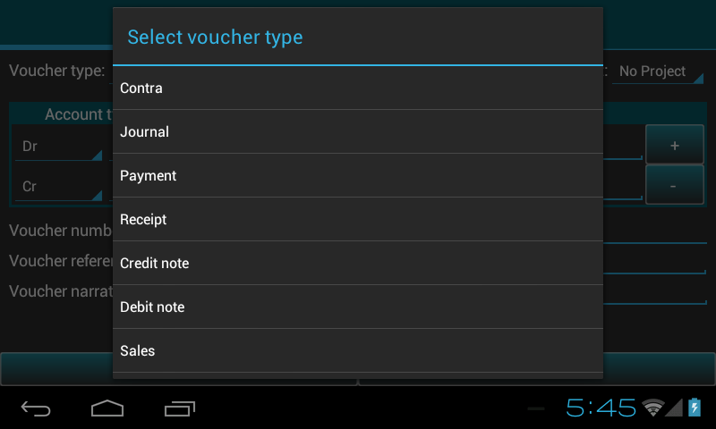
There should be atleast two accounts for recording transactions. To get started with,
- Select account Type(Dr/Cr), Account name from the dropdown and enter the Amount in rupees
and repeat the same until amount gets tallied. Use plus button for adding new row.
- Note: ABT populates drop down of account name by voucher type rule.
For example, if transaction type is contra, it filters account names that
comes under contra and fill them in the drop down.
- Closing balance is displayed in between the account name and amount field. It’s a read only field.
- Press Voucher date to set the date of transaction.
- Note: ABT sets financial date as Voucher date, if no transaction is recorded before.
If any transaction is previously recorded,it sets the voucher date of the previous transaction
of the respective voucher type. If the date is changed, it updates the bydefault date or previous
date with the new date.
- Press Project name to select the project name from list of projects for recording transaction
under that particular project, otherwise select No project.
- Enter Voucher code.
- Enter Voucher reference No. or edit the last reference No. .
- Enter Narration.
- Press Save to save transaction and Reset to clear all fields.
- After saving transaction it resets all the fields automatically.
- Reset button shown below , present at the bottom will resets all the fields automatically.
- You can change the voucher type if you want to make different voucher entries.
Search/Edit/Clone/Delete Transaction
- To Edit/Clone/Delete transaction select Search voucher tab.
- Its displays all transactions for the complete financial year which comes under selected
voucher type in create account page as shown in figure.
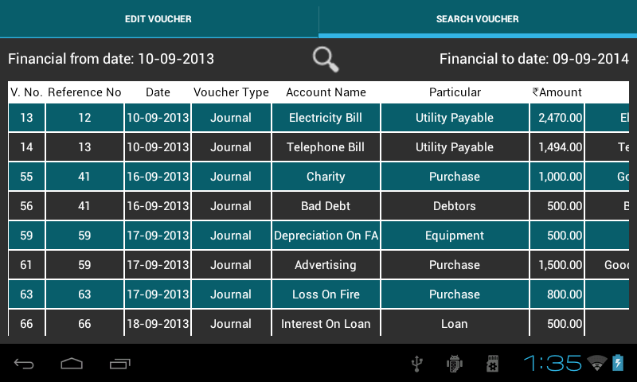
- Press Search button (see figure) to search transaction by Voucher reference No., Date or Narration
and press View button to view the transactions.
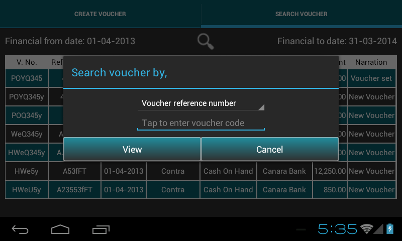
- Click table row to Edit/Clone/Delete the transactions.
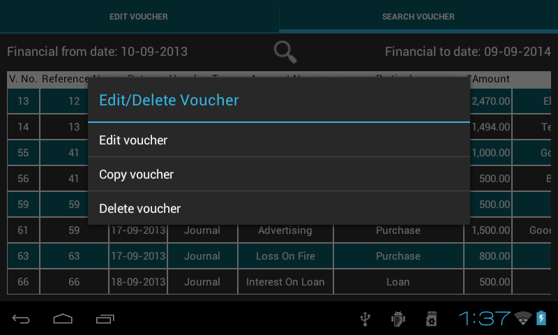
- In Edit voucher, except Voucher No., all other fields are editable. Press Save to save the changes.
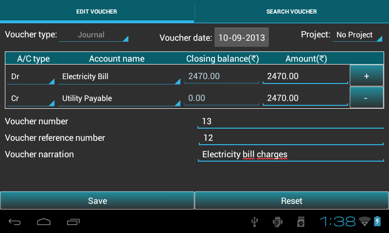
- Clone voucher duplicates information on an existing transaction, to create a new one without having to enter all the fields. There is an option to keep or change the existing field values. Press Save to save the transaction.
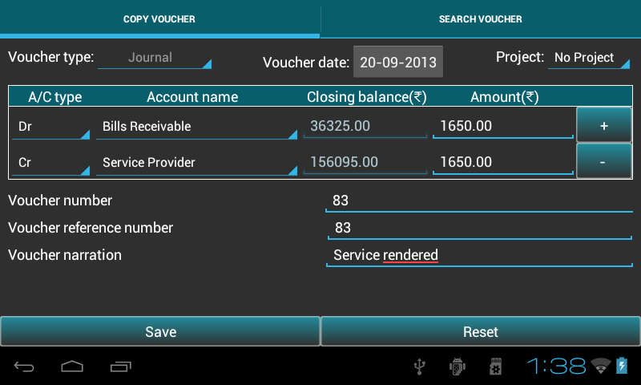
- Delete voucher: Press Delete to delete the transaction.
Reports
- Go to master menu >> Reports.
- It displays list of all types of reports provided by ABT. If organisation type is NGO, it shows Income and Expenditure in the list otherwise Profit and Loss.
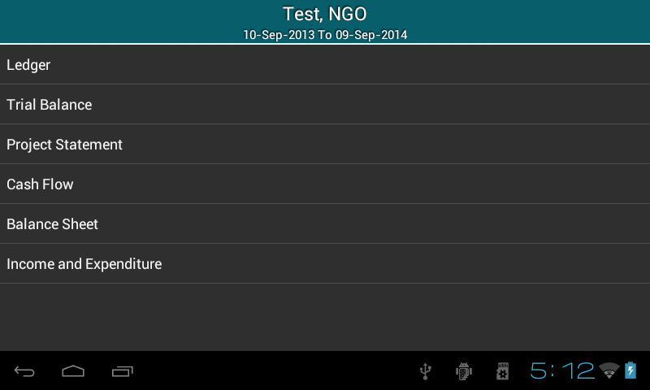
- Title will display respective organisation information such as name, type and financial year.
- Options button is provided to export report in a PDF or CSV format.
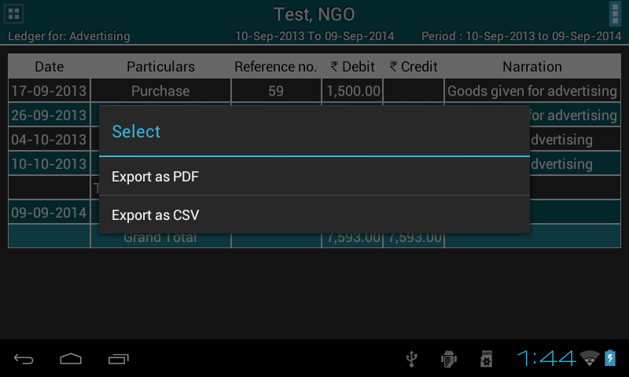
- You can also set security to your file.
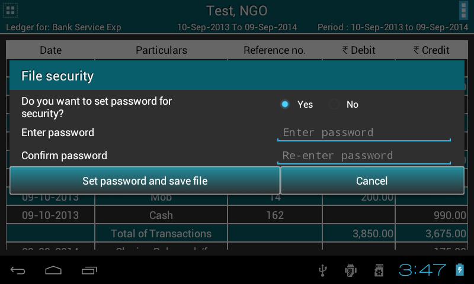
- You can find the exported PDF/CSV files in ABT_PDF/ABT_CSV folders located at your Home folder .
Ledger
Select Ledger option from list, It will pop up a dialog box (see fig.) which ask’s following information:
- Account name for which ledger to be shown. Select account name from the dropdown.
- from date and to date, by default it is financial year’s from date and to date. Change date as per the requirement or keep it as it is.
- Check box to view transactions with narrations.
- Project name to view projectwise ledger. Select project from the dropdown, by default No Project is selected.
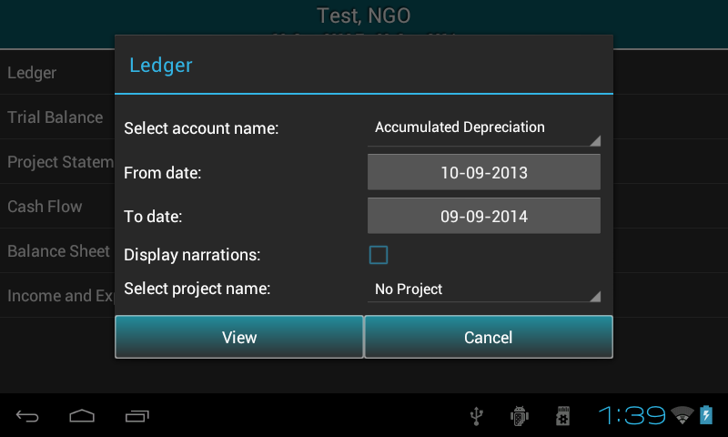
- Press View.
- It will display ledger for the given period in a tabular format. Opening balance is located at the first row of the table followed by transactions, with Total of transactions, Closing balance and Grand total at bottom of the table.
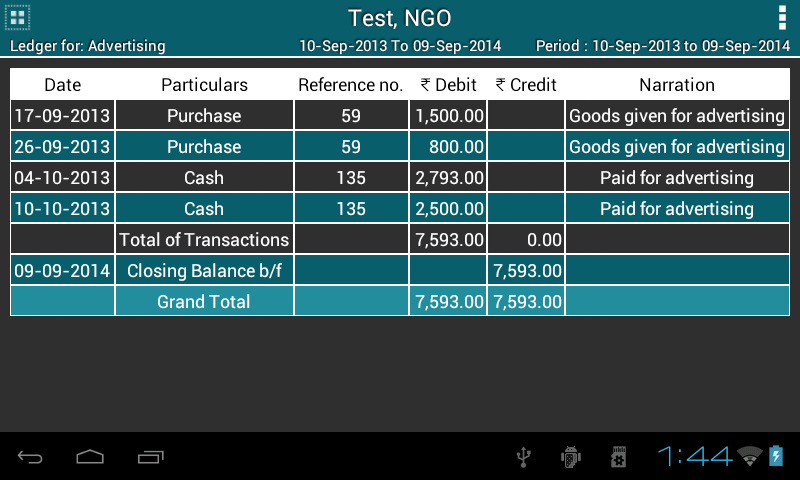
Trial Balance
- Like Ledger, It will pop up a dialog box (see fig.) which ask’s following information:
- to date, by default it is financial year’s to date. Change date as per the requirement or keep it as it is.
- Trial Balance type. In ABT, there are 3 types of trial balances such as Net, Gross and Extended. Select it from the dropdown.
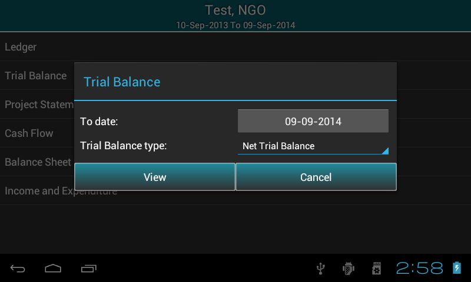
- Press View.
- It will display Trial Balance for the given period in a tabular format. Difference in Opening Balance is located at the bottom of the screen.

Project Statement
- It will pop up a dialog box (see fig.) which ask’s following information:
- to date, by default it is financial year’s to date. Change date as per the requirement or keep it as it is.
- Project name to view projectwise transactions. Select project from the dropdown, by default No Project is selected.
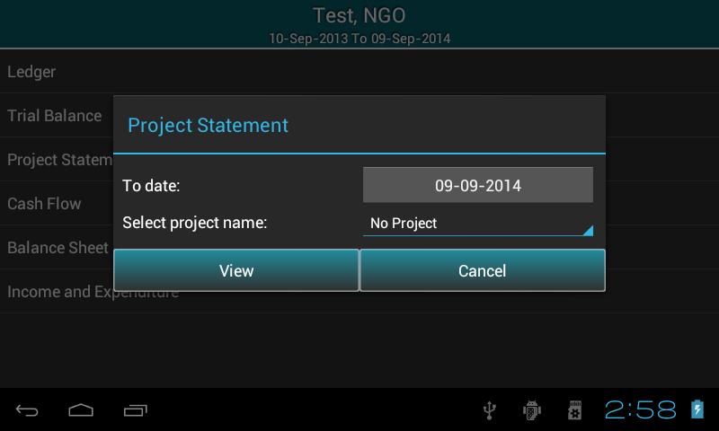
- Press View.
- It will display Project Statement for the given period in a tabular format. Difference in Opening Balance is located at the bottom of the screen.
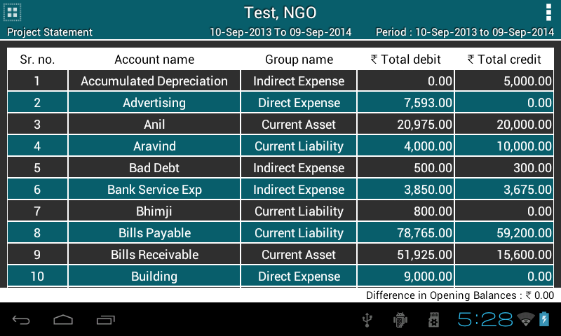
Cash Flow
- It will pop up a dialog box (see fig.) which ask’s following information:
- from date and to date, by default it is financial year’s from date and to date. Change date as per the requirement or keep it as it is.
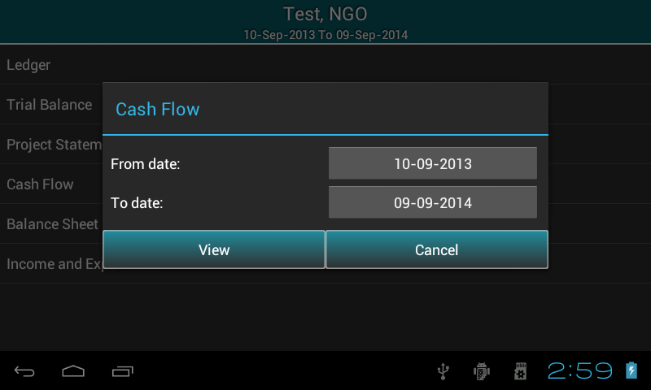
- Press View.
- It will display Cash Flow for the given period in a tabular format. Net Flow is located at the bottom of the screen.
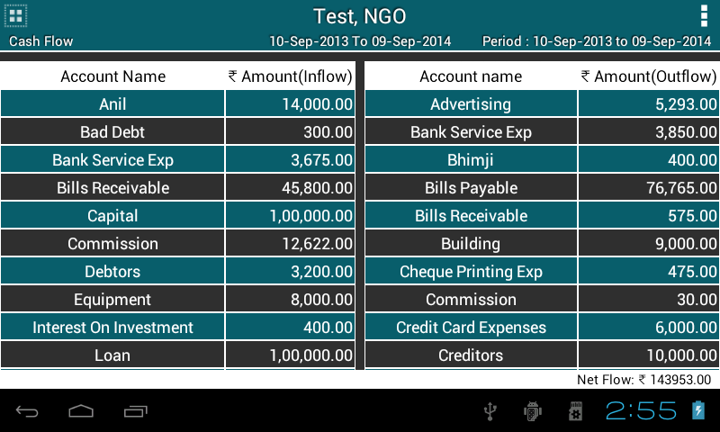
Balance Sheet
- It will pop up a dialog box (see fig.) which ask’s following information:
- to date, by default it is financial year’s to date. Change date as per the requirement or keep it as it is.
- Balance Sheet type. In ABT, there are 2 types of balance Sheets such as Conventional(horizontal) and Sources & Application of Funds(vertical). Select it from the dropdown.
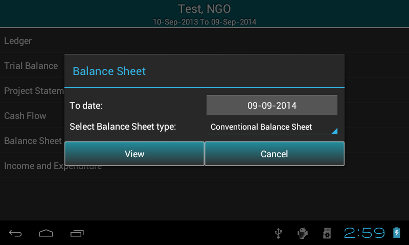
- Press View.
- It will display Balance Sheet for the given period in a tabular format. Difference in Opening Balance is located at the bottom of the screen.
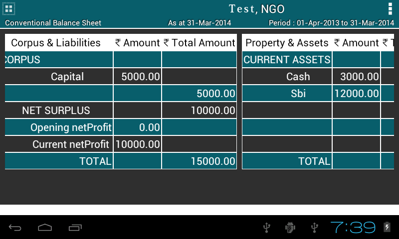
Income & Expenditure/Profit & Loss
- It will pop up a dialog box (see fig.) which ask’s following information:
- to date, by default it is financial year’s to date. Change date as per the requirement or keep it as it is.
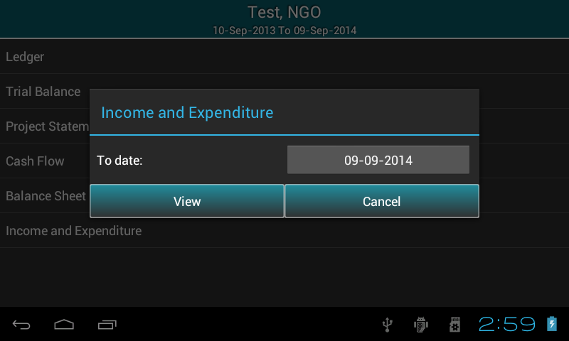
- Press View.
- It will display Income & Expenditure/Profit & Loss for the given period in a tabular format.
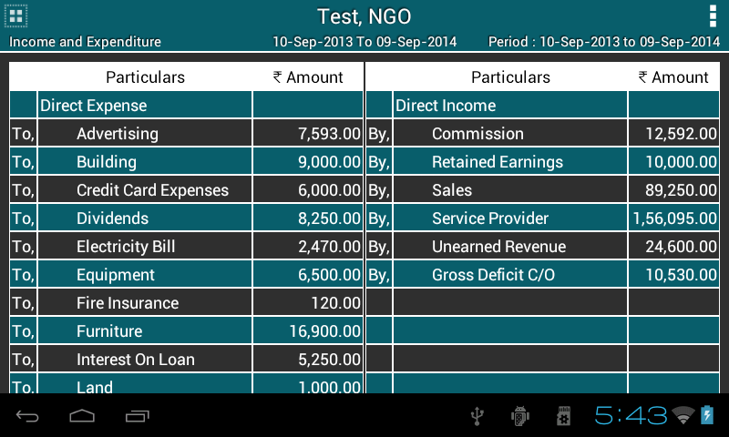
Bank reconciliation
- Go to Master menu > Bank Reconciliation.
- It will pop up a dialog box (see fig.) which ask’s following information.
- Account name for which Bank Reconciliation is to be done. Select account name from the dropdown.
- from date and to date, by default it is financial year’s from date and to date. Change date as per the requirement.
- Check box to view cleared+uncleared transactions.
- Check box to view transactions with narrations.
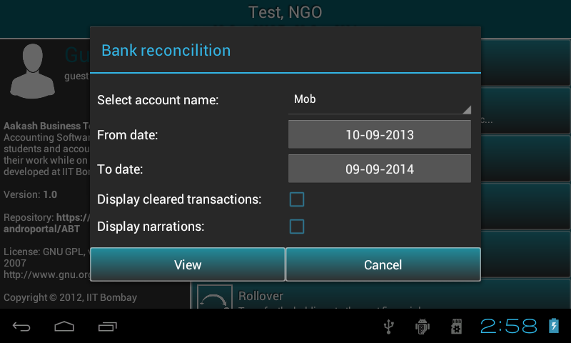
- Press View.
- It will display all transactions(cleared + uncleared) for that period and all uncleared transactions from starting day of financial year to the last day of the entered period for that account in a tabular format.
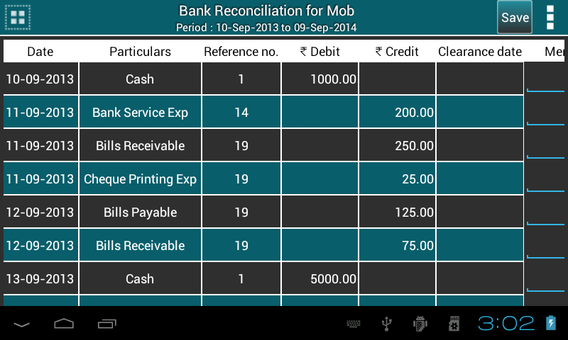
- More about this table:
- Total Debit & Total Credit at the end of the table.
- Bank Reconciliation Statement is located at the bottom of the table.
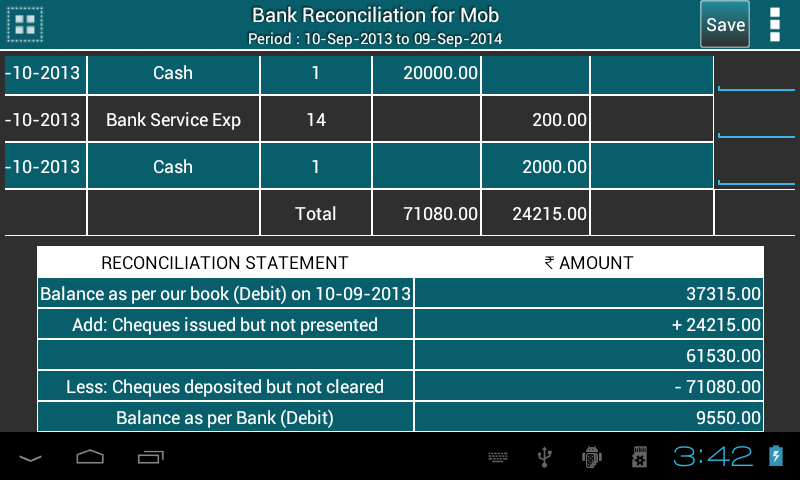
- Options button is provided to export report in a PDF or CSV format.
Export/Import organisation
Export organisation :
- Go to Master menu > Export organisation.
- Click on it, It will pop up a dialog box (see fig.) which ask’s “Do you want to export organisation”.
- If you will click on Yes then, it will again prompt “organisation has been exported to /mnt/sdcard/export/”.
- See, there is a location in tablet called /mnt/sdcard/export , you can able ton find exported organisation
sql formated file.
Import organisation :
- To import same organisation in another tablet just transfer export folder, provided ABT is installed.
- Import option is available at first page of ABT in Options menu.

- Just click on Import, it will show all available exported organisation and financial years
to import it on current tablet.
- Now, select organisation name and it’s financial year which you would like to import and click on Import button.